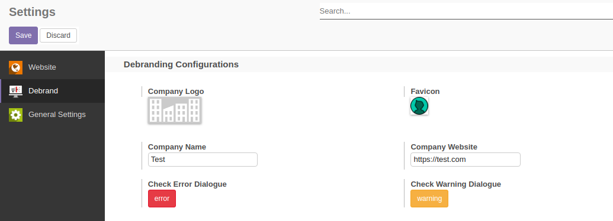
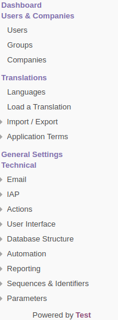
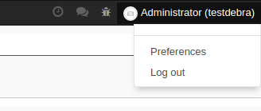
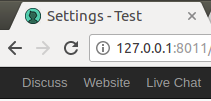
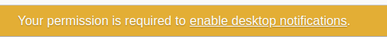
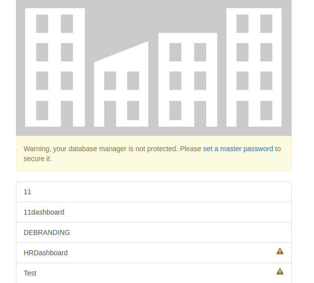
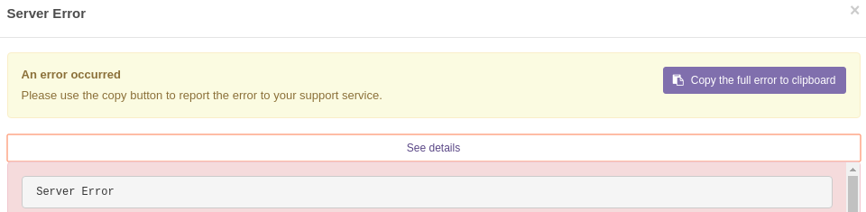
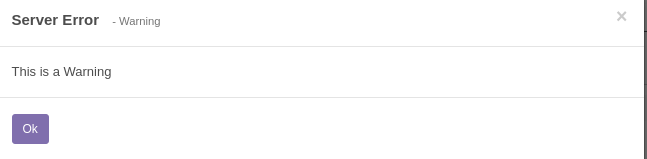
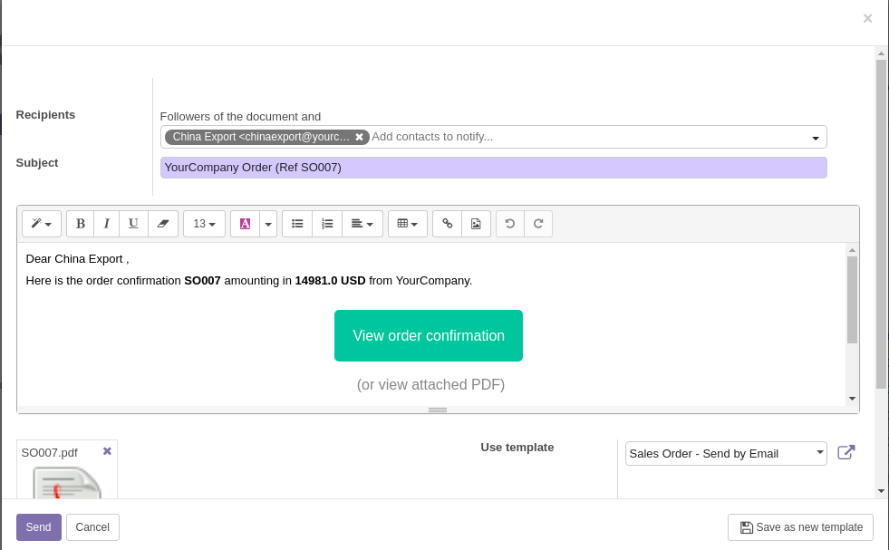
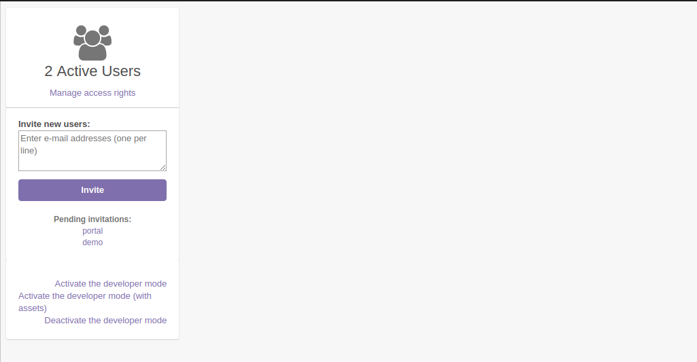

Odoo Debranding
Odoo Debranding is a tool to remove the odoo promotions and links and replace it with your custom details. Dialogues, popup windows, social icons, footer, header and all related stuff can be changed with your company data. You should fill the fields under general settings to complete the configurations. This will update the following details.
- Warning Dialogues
- Error Dialogues
- Wizards
- Front-end footers
- Backend pages
- Favicons
- Company Logo
- Database selector Page
- Database manager page
- Page title
Features!
- Front-end and Back-end debranding
- Admin can check the error and warning message from debrand settings
- Removes odoo promotional links
- Removes odoo promotional tabs from settings
After instllation of this module,
you have to fill the details under
general settings -> odoo-debrand
Screenshots
Configurations

Powered by footer Back-end

Removes Odoo account,documentation drop down menus.

Update browser page title, Favicon

Remove Odoo title on permission banner

Odoo titles, Company logo on Database Management page

Update Odoo titles on Error Dialogues

Update Odoo titles on Warning Dialogues

Update Odoo titles on popup Wizards

Remove odoo promotional banners.

Tech
Odoo Debranding uses
Installation
Install the odoo and dependency modules defined in manifest. After installation you can configure details under general settings.
Recommends only for community version, Not tested for enterprise or other editions!
Contributer
Bug Tracker
License